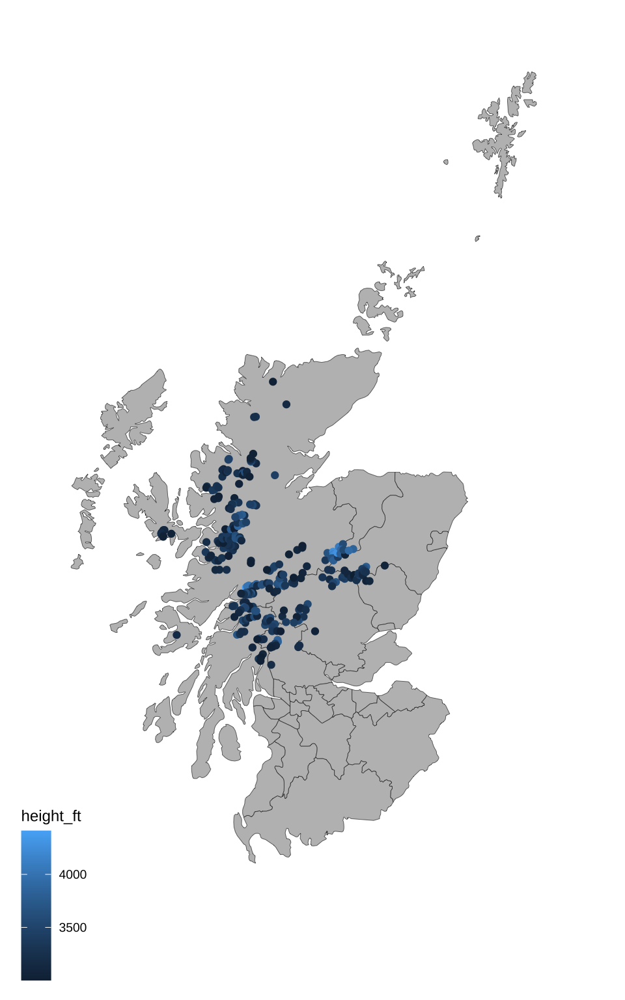

This is pretty much a non-interactive version of a chart from the 2022 30-Day Chart Challenge, since I’m trying not to spend too much time on this and also had to set up the book today.
Setup
library(tidyverse) # for data wranglinglibrary(sf) # for mapslibrary(rnaturalearth) # for map coordinateslibrary(ggthemes) # for the map themelibrary(showtext) # for fonts# install a good Scottish font# https://www.fontspace.com/hill-house-font-f40002font_add(family ="Hill House",regular ="fonts/Hill_House.otf")showtext_auto()
1.1 Data
The Database of British and Irish Hills v17.3 has a table of the Munros, with columns for many years (I guess which hills are classified as Munros changes over time). Let’s get just the current munros and fix some of the names.
Code
munros <-read_csv("data/munrotab_v8.0.1.csv",show_col_types =FALSE) %>%filter(`2021`=="MUN") %>%select(-c(`1891`:`2021`)) %>%# get rid of the year columnsrename(height_m ="Height (m)", height_ft ="Height\n(ft)")
Make a quick histogram of their heights to get an overview of the data. I’d usually use the metric system, but since Munros are defined as hills over 3000 feet, I’ll use feet.
Code
ggplot(munros, aes(x = height_ft)) +geom_histogram(binwidth =100, boundary =0, color ="black", fill ="white")
The munro table locates the peaks using grid coordinates, and the map uses latitude and longitude. So I translated the grid coordinates to latitude and longitude using Stackoverflow code from hrbrmstr.
Then plot the latitude and longitude coordinates on the map, colored by height.
Code
ggplot() +geom_sf(data = scotland_sf,mapping =aes(),color ="black", fill ="grey",size = .1) +coord_sf(xlim =c(-8, 0), ylim =c(54, 61)) +geom_point(aes(x = lon, y = lat, color = height_ft), munros) +theme_map()

1.3 Make it prettier
There’s no munros on the Northern Isles, so I’ve cropped them out of the map. I also made the colours better. I added a label to geom_point(), which will produce a warning that it isn’t used, but you’ll see why in the next step.
The version of Hill House I have doesn’t have lowercase letters, so I’m using all uppercase for the title.
Code
munro_plot <-ggplot() +geom_sf(data = scotland_sf,mapping =aes(),color ="chocolate4", fill ="tan",size = .1) +coord_sf(xlim =c(-7.4, -2), ylim =c(54.8, 58.5)) +geom_point(aes(label = Name, color = height_ft, y = lat, x = lon), data =arrange(munros, height_ft),size =0.5) +scale_color_viridis_c(name ="Height (ft)",limits =c(3000, 4500)) +labs(x =NULL, y =NULL,title ="THE MUNROS OF SCOTLAND",caption ="Data from The Database of British and Irish Hills | Plot by @debruine@tech.lgbt") +theme_map() +theme(legend.position =c(0, 0),legend.background =element_blank(),panel.background =element_rect(fill ="transparent", color ="transparent"),plot.background =element_rect(fill ="lightskyblue1", color ="transparent"),plot.title =element_text(family ="Hill House", size =26, hjust = .5) )munro_plot